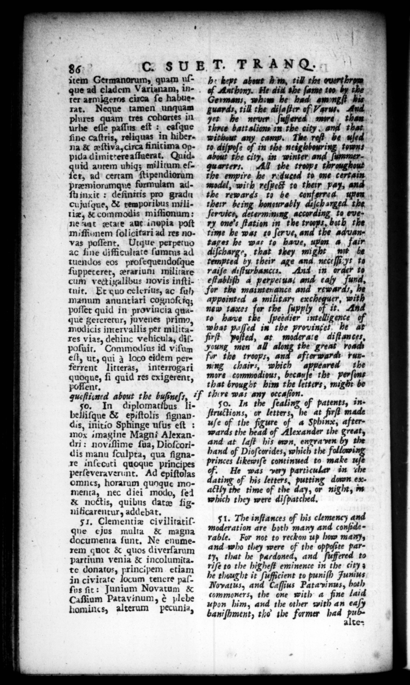

88 item Germanorum, quam uſaue ad cladem Varianam, inter armĩgeros cixca ſe habue rat. Neque tamen unquam plures m tres cohortes in urbe * paſſus eſt : eaſque ſine caſtris, reliquas in hiberna & æſtiva, circa finitima oppida dĩimittere aſſuerat. Quiduid autem uhiꝗʒ mil itum eſſet, ad certam ſtipendiorum præmiorumque formulam adſt inxit: deſinitis pro gradu cujuſque, & temporibus militiz, & commodis miſſionum: ne aat tate aut inopia poſt miſſiunem ſolicitari ad res novas poſſent. Utque perpetuo ac ſine difficultate ſumtus ad tuendos eos proſequendoſque ſuppeteret, ærariuni militare cum vectigalibus novis inſtitunit. Et quo celerius, ac ſul manum anuntiari cognoſciqʒ poſſet quid in provincia quaque gereretur, juvenes primo, modicis intervallis per militares viae, dehinc vehicula, dif. poſuit. Commodius id viſum eſt, ut, qui 3 loco eidem perferrent litteras, interrogari quoque, ſi quid res exigerent, poflent. 8D. T. T RANG. h: kept about h'm, till the cue of Anthony. He ait the ſame too by + Germans, whom he had. — his guards, till the diſaſter of Varus. And r he nruer ſuffered more, than.” three battalion in the city. and that. to diſpoſe of in the neighbouring ; about the city, in winter ummerquarters, All the troops throughout the empire he roquced to one certain model, with reſpet# to their pay, and. the rewards to be conferred. upen therr being honourably daſch arged. the ſervice, determining according to eve» ry one's ſtation in the troops, bath the time he was to ſerve, and the aduantages he was to have, upon 4. fair oberg, that they might mit be remprted by. their age and neceſſi yt to raiſe d:ſturbanccs. And in order 10 eſtabliſh 4 perperus; and ealy fund, for the maintenance rewara:, | appointed a military exchequer, with new 1axes 3 the ſupply of it. A ro have the ſpeedier intelligence what paſſed in the provinget. he firſt — ed, at moderate diſtances, young men all the great roads for the troops, and afterwards running chairs, which appeared the more commodious, becauſe the perſons that brought him the letters, might be gqueſiigned about the buſineſs if thire was any occaſion. 50. In diplomatfbus libelliſque & epiſtolis ſignandis, initio Sphinge uſus eſt : mox imagine Magni Alexandri: noviſſime ſua, Dioſcoridis manu ſculpta, qua ſignare inſecuti quoque princi perſeveraverint. Ad epiſtolas omnes, horarum quoque momenta, nec diei modo, ſel & noctis, quibus date ſignificarentur, addebat. 51, Clementiæ civilitatiſque ejos multa & magna documenta ſunt. Ne enumerem quot & quos diverſarum partium venia & incolumita. te donatos, principem etiam in civitate locum tencre paſſos ſit: Junium Novatum & Caſſium Patavinum, è plebe homincs, alterum pecunia, 50. In the ſealing of patents, inions, or — he at firſt made uſe ＋ the figure of a Sphinx, afterwards the head of Alexander the great, and at laſt his n, engra ven by the hand of Dioſcorides, which the follow princes likewiſe continued to make 11 He was particular in the ating of his letters, putting dumm exattly the time of the AN night, in which they were diſpatched. 51. The inſtances of his clemency and moderation * — Hee and confod: + _ _ not to ww up — many, and were of the oppoſtte party, that 28 and ſuffered to riſe to the higheſt eminence in the city he thought it ſufficient to puniſh Junius Novatus, and Caſſius Pata vi nus, both commoners, the one with a fine laid upon him, and the other with an eaſy baniſhment, tho the former had — Alte:
